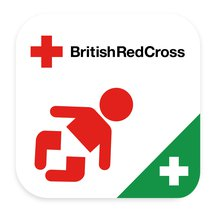
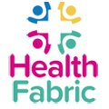

Health A-Z
Your complete guide to conditions, symptoms and treatments, including what to do and when to get help.
Go to the Health A-ZMedicines A-Z
Find out how your medicine works, how and when to take it, possible side effects and answers to your common questions.
Go to the Medicines A-ZNHS services
Find the service you need and book appointments online.
Find other NHS servicesIf you need help now, but it’s not an emergency
Go to 111.nhs.uk or call 111.
Book GP appointments and order prescriptions online
All GP practices now offer online services to:
- book or cancel appointments
- order repeat prescriptions
- see parts of your medical record
Every month, over 1 million appointments are booked online and over 2 million prescriptions are ordered without needing to visit a GP.
Focus on...
European Health Insurance Card (EHIC)
An EHIC can help you get free or reduced-cost healthcare while visiting many countries in Europe.
Apply for or renew your EHICHealthy living
Advice, tips and tools to help you make the best choices about your health and wellbeing.
Help with stress, anxiety and depression
Go to healthy livingHealth apps
From exercise apps to managing diabetes, find digital tools to help you manage and improve your health.
Recently added apps
-
Baby and Child First Aid Pregnancy and Baby
-
Be Mindful Mental Health
-
My Health Fabric Healthy Living
-
BECCA Breast Cancer Care App Cancer